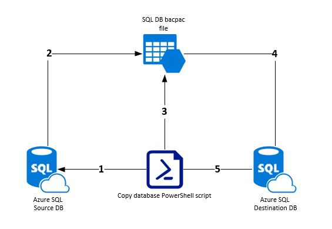
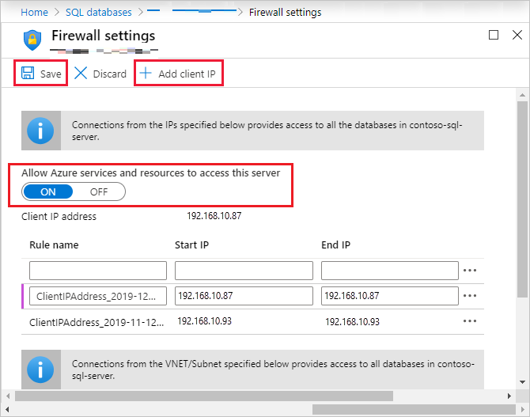

Copy Azure database between stages

Goal of this article is to show you how to easily migrate database between two Azure SQL Servers. It can be usefull in scenarios where you need to have exact configuration on two environments and want to have it done in automatic way. However you should bear in mind that for big size databases process of migration can take quite long.
What services are needed to have solution working properly?
The only service which is mandatory (besides two Azure SQL Servers) is Azure Storage Account, on which bacpac files will be stored. It's up to you how you will configure this storage, as there aren't any specific requirement.
How the process of migration looks like?
As you probably saw on main picture of this article the process is quite easy:
- Script initialize connection to source database.
- Script is starting export of bacpac file from source database to storage account.
- Script checks if bacpac was properly created.
- Script is starting import of bacpac file to destination database from storage account.
- Script validate if process of importing bacpac file finished with success.
Prerequisites
- Az module installed on platform on which script will be run (eg. your local PC, Azure DevOps pipeline, Azure Automation)
Install-Module -Name Az -Force
- Firewall rule added on SQL Server (if you are using local PC) or option "Allow Azure services and resources to access this server" in case you use some other Azure service to run the script. 
- Blob container called "bacpacs" created on storage account.
- Account/Service Prinicipal under which script will work should have proper permission (Contributor) assigned to storage account.
Script:
Copy database between stages Source Code
param(
$sourceSqlUser,
$sourceSubscriptionID,
$sourceSqlServerResourceGroup,
$sourceSqlServerName,
$sourceSqlDatabaseName,
$destinationDatabaseEdition,
$destinationServiceObjectiveName,
$destinationDatabaseMaxSizeBytes,
$destinationSqlUser,
$destinationSubscriptionID,
$destinationSqlServerResourceGroup,
$destinationSqlServerName,
$destinationSqlDatabaseName,
$commonSubscriptionId,
$storageAccountName,
$storageAccountResourceGroup,
$keyVaultName,
$sqlServerSourceKeyVaultEntry,
$sqlServerDestinationKeyVaultEntry,
$tenantId
)
Connect-AzAccount -TenantId $tenantId
Select-AzSubscription -SubscriptionId $commonSubscriptionID | Out-Null
$blobUrl = (Get-AzStorageAccount -ResourceGroupName $storageAccountResourceGroup -Name $storageAccountName | Select-Object *).Context.BlobEndpoint
$storageAccountKey = (Get-AzStorageAccountKey -ResourceGroupName $storageAccountResourceGroup -Name $storageAccountName)[0].Value
$sourceSqlServerPassword = (Get-AzKeyVaultSecret -VaultName $keyVaultName -Name $sqlServerSourceKeyVaultEntry).SecretValue
$destinationSqlServerPassword = (Get-AzKeyVaultSecret -VaultName $KeyVaultName -Name $sqlServerDestinationKeyVaultEntry).SecretValue
Select-AzSubscription -SubscriptionId $sourceSubscriptionID | Out-Null
Try {
Get-AzSqlDatabase -DatabaseName $sourceSqlDatabaseName -ServerName $sourceSqlServerName -ResourceGroupName $sourceSqlServerResourceGroup
Write-Output "Found $sourceSqlDatabaseName database on SQL Server $sourceSqlServerName"
}
Catch {
Write-Output "Database $sourceSqlDatabaseName can not be found on SQL Server $sourceSqlServerName"
exit
}
$date = Get-Date -Format yyyyMMdd
$url = $blobUrl + "bacpacs/$sourceSqlDatabaseName_$date.bacpac"
$exportRequest = New-AzSqlDatabaseExport -DatabaseName $sourceSqlDatabaseName -ResourceGroupName $sourceSqlServerResourceGroup -ServerName $sourceSqlServerName -StorageKeyType "StorageAccessKey" -StorageUri $url -StorageKey $shdStorageAccountKey -AdministratorLogin $sourceSqlUser -AdministratorLoginPassword $sourceSqlServerPassword
$exportStatus = Get-AzSqlDatabaseImportExportStatus -OperationStatusLink $exportRequest.OperationStatusLink
Write-Output "Exporting database $sourceSqlDatabaseName to bacpac file"
while ($exportStatus.Status -eq "InProgress") {
Start-Sleep -s 10
$exportStatus = Get-AzSqlDatabaseImportExportStatus -OperationStatusLink $exportRequest.OperationStatusLink
Write-Output "Exporting..."
}
Write-Output "Proceeding with destination database..."
Select-AzSubscription -SubscriptionId $destinationSubscriptionID | Out-Null
if ($exportStatus.Status -eq "Succeeded") {
Write-Output "Database $sourceSqlDatabaseName export to bacpac file finished with success."
$targetDatabase = Get-AzSqlDatabase -DatabaseName $destinationSqlDatabaseName -ResourceGroupName $destinationSqlServerResourceGroup -ServerName $destinationSqlServerName
if ($targetDatabase) {
Try {
Write-Output "Removing database $destinationSqlDatabaseName on target server as it already exist."
Remove-AzSqlDatabase -DatabaseName $destinationSqlDatabaseName -ResourceGroupName $destinationSqlServerResourceGroup -ServerName $destinationSqlServerName
Write-Output "Database $destinationSqlDatabaseName removal finished with success"
}
Catch {
Write-Output "Unexpected error occured during removal of database $destinationSqlDatabaseName from server $destinationSqlServerName . Error: $($_.Exception.Message)"
}
}
$importRequest = New-AzSqlDatabaseImport -DatabaseName $destinationSqlDatabaseName -ResourceGroupName $destinationSqlServerResourceGroup-ServerName $destinationSqlServerName -StorageKeyType "StorageAccessKey" -StorageUri $url -StorageKey $storageAccountKey -AdministratorLogin $destinationSqlUser -AdministratorLoginPassword $destinationSqlServerPassword -Edition $destinationDatabaseEdition -ServiceObjectiveName $destinationServiceObjectiveName -DatabaseMaxSizeBytes $destinationDatabaseMaxSizeBytes
$importStatus = Get-AzSqlDatabaseImportExportStatus -OperationStatusLink $importRequest.OperationStatusLink
Write-Output "Importing database $destinationSqlDatabaseName from bacpac file"
while ($importStatus.Status -eq "InProgress") {
Start-Sleep -s 10
$importStatus = Get-AzSqlDatabaseImportExportStatus -OperationStatusLink $importRequest.OperationStatusLink
Write-Output "Importing..."
}
if ($importStatus.Status -eq "Succeeded") {
Write-Output "Database $destinationSqlDatabaseName import finished with success."
}
else {
Write-Output "Import of database $destinationSqlDatabaseName to SQL server $destinationSqlServerName failed. Error: $($importStatus.StatusMessage)"
}
}
else {
Write-Output "Export of database $destinationSqlDatabaseName from SQL server $destinationSqlServerName failed. Error: $($exportStatus.StatusMessage)"
}
Things to have in mind before applying this solution
- Script will automatically remove database in the destination if it already exist, ensure that it can be done before running script.
- Check if database can be copied to different SQL server as it can contain some data which are sensitive and should be used only in specific environment.
- Ensure that provided secrets names are created and you have proper access policy configured for you account/service principal.